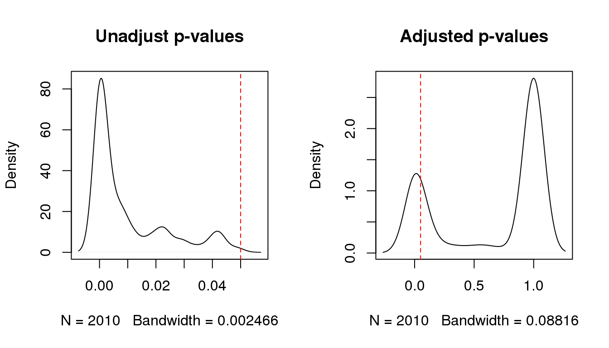

2.12 Gene set enrichment
Gene Ontology (GO) enrichment is a method for investigating sets of genes using the Gene Ontology system classification, in which genes are assigned to a particular set of terms for three major domains: cellular component, biological process and molecular function.
The GOstats package can test for both over and under representation of GO terms using the standard hypergeometric test. The output of the analysis is typically a ranked list of GO terms, each associated with a p-value.
The hypergeometric test will require both a list of selected genes (e.g. your DE genes) and a “universe” list (e.g. all genes represented that were tested for differential expression), all represented by their “EntrezGene” ID.
Get the list of universe entrez IDs:
library(GOstats)## Loading required package: Category## Loading required package: AnnotationDbi##
## Attaching package: 'AnnotationDbi'## The following object is masked from 'package:MASS':
##
## select## Loading required package: Matrix##
## Attaching package: 'Matrix'## The following object is masked from 'package:tidyr':
##
## expand## The following object is masked from 'package:S4Vectors':
##
## expand## Loading required package: graph##
## Attaching package: 'graph'## The following object is masked from 'package:Biostrings':
##
## complement## ##
## Attaching package: 'GOstats'## The following object is masked from 'package:AnnotationDbi':
##
## makeGOGraphuniverse.entrezID <- rownames(filtered.raw.counts)
length(universe.entrezID)## [1] 15050Before running the hypergeometric test with the hyperGTest function, you need to define the parameters for the test (gene lists, ontology, test direction) as well as the annotation database to be used. The ontology to be tested for can be any of the three GO domains: biological process (“BP”), cellular component (“CC”) or molecular function (“MF”).
In the example below, we will test for over-represented Biological Processes in our list of differentially expressed genes.
annotationDB <- "org.Hs.eg.db"
hgCutoff <- 0.05
params <- new("GOHyperGParams",
geneIds=DEG.entrezID,
universeGeneIds=universe.entrezID,
annotation=annotationDB,
ontology="BP",
pvalueCutoff=hgCutoff,
testDirection="over")
# Run the test
hg <- hyperGTest(params)
hg## [1] 2010 7## GOBPID Pvalue OddsRatio ExpCount Count Size
## 1 GO:0006082 6.074927e-66 4.964910 73.47815 236 820
## 2 GO:0043436 1.146564e-58 4.766285 68.28092 216 762
## 3 GO:0019752 9.451120e-58 4.729580 67.92249 214 758
## 4 GO:0044281 1.899138e-54 3.336444 141.75907 326 1582
## 5 GO:0032787 9.530910e-54 5.891811 42.20513 159 471
## 6 GO:0006952 2.581186e-53 3.968852 88.26339 242 985
## 7 GO:0044710 5.216264e-51 2.692125 289.34263 509 3229
## 8 GO:0006954 1.371656e-48 5.643188 40.14416 148 448
## 9 GO:0006955 2.441550e-43 3.477192 91.04122 229 1016
## 10 GO:0008202 1.761494e-41 8.038462 20.16169 95 225
## Term
## 1 organic acid metabolic process
## 2 oxoacid metabolic process
## 3 carboxylic acid metabolic process
## 4 small molecule metabolic process
## 5 monocarboxylic acid metabolic process
## 6 defense response
## 7 single-organism metabolic process
## 8 inflammatory response
## 9 immune response
## 10 steroid metabolic processWe need to adjust for multiple testing using the p.adjust() function. You can specify the type of adjustment method to use, we are using bonferroni in this example. Assign the adjusted pvalues back to the hg.df data object. Reorder the columns so that the unadjusted and adjusted p-values are next to each other.
hg.df <- summary(hg)
hg.df$Adj.Pvalue <- p.adjust(hg.df$Pvalue, 'bonferroni')
hg.df <- hg.df[,c(1:2,8,3:7)]
head(hg.df,10)## GOBPID Pvalue Adj.Pvalue OddsRatio ExpCount Count Size
## 1 GO:0006082 6.074927e-66 1.221060e-62 4.964910 73.47815 236 820
## 2 GO:0043436 1.146564e-58 2.304594e-55 4.766285 68.28092 216 762
## 3 GO:0019752 9.451120e-58 1.899675e-54 4.729580 67.92249 214 758
## 4 GO:0044281 1.899138e-54 3.817267e-51 3.336444 141.75907 326 1582
## 5 GO:0032787 9.530910e-54 1.915713e-50 5.891811 42.20513 159 471
## 6 GO:0006952 2.581186e-53 5.188184e-50 3.968852 88.26339 242 985
## 7 GO:0044710 5.216264e-51 1.048469e-47 2.692125 289.34263 509 3229
## 8 GO:0006954 1.371656e-48 2.757028e-45 5.643188 40.14416 148 448
## 9 GO:0006955 2.441550e-43 4.907515e-40 3.477192 91.04122 229 1016
## 10 GO:0008202 1.761494e-41 3.540603e-38 8.038462 20.16169 95 225
## Term
## 1 organic acid metabolic process
## 2 oxoacid metabolic process
## 3 carboxylic acid metabolic process
## 4 small molecule metabolic process
## 5 monocarboxylic acid metabolic process
## 6 defense response
## 7 single-organism metabolic process
## 8 inflammatory response
## 9 immune response
## 10 steroid metabolic processCompare before and after multiple adjustment:
par(mfrow=c(1,2))
plot(density(hg.df$Pvalue),'Unadjust p-values')
abline(v=hgCutoff,col='red',lty=2)
plot(density(hg.df$Adj.Pvalue),'Adjusted p-values')
abline(v=hgCutoff,col='red',lty=2)
Keep only the significant GO terms after adjusting for multiple testing:
sigGO.table <- subset(hg.df, Adj.Pvalue < hgCutoff)
dim(sigGO.table)## [1] 517 8head(sigGO.table,10)## GOBPID Pvalue Adj.Pvalue OddsRatio ExpCount Count Size
## 1 GO:0006082 6.074927e-66 1.221060e-62 4.964910 73.47815 236 820
## 2 GO:0043436 1.146564e-58 2.304594e-55 4.766285 68.28092 216 762
## 3 GO:0019752 9.451120e-58 1.899675e-54 4.729580 67.92249 214 758
## 4 GO:0044281 1.899138e-54 3.817267e-51 3.336444 141.75907 326 1582
## 5 GO:0032787 9.530910e-54 1.915713e-50 5.891811 42.20513 159 471
## 6 GO:0006952 2.581186e-53 5.188184e-50 3.968852 88.26339 242 985
## 7 GO:0044710 5.216264e-51 1.048469e-47 2.692125 289.34263 509 3229
## 8 GO:0006954 1.371656e-48 2.757028e-45 5.643188 40.14416 148 448
## 9 GO:0006955 2.441550e-43 4.907515e-40 3.477192 91.04122 229 1016
## 10 GO:0008202 1.761494e-41 3.540603e-38 8.038462 20.16169 95 225
## Term
## 1 organic acid metabolic process
## 2 oxoacid metabolic process
## 3 carboxylic acid metabolic process
## 4 small molecule metabolic process
## 5 monocarboxylic acid metabolic process
## 6 defense response
## 7 single-organism metabolic process
## 8 inflammatory response
## 9 immune response
## 10 steroid metabolic processOther software can be used to investigate over-represented pathways, such as GeneGO https://portal.genego.com/ and Ingenuity http://www.ingenuity.com/products/ ipa. The advantage of these applications is that they maintain curated and up-to-date extensive databases. They also provide intuitive visualisation and network modelling tools.
Save an image of your RNAseq analysis.
save.image(file=file.path(RESULTS_DIR,"RNAseq.Rdata"))SessionInfo
sessionInfo()## R version 3.3.3 (2017-03-06)
## Platform: x86_64-redhat-linux-gnu (64-bit)
## Running under: CentOS Linux 7 (Core)
##
## locale:
## [1] LC_CTYPE=en_AU.UTF-8 LC_NUMERIC=C
## [3] LC_TIME=en_AU.UTF-8 LC_COLLATE=en_AU.UTF-8
## [5] LC_MONETARY=en_AU.UTF-8 LC_MESSAGES=en_AU.UTF-8
## [7] LC_PAPER=en_AU.UTF-8 LC_NAME=C
## [9] LC_ADDRESS=C LC_TELEPHONE=C
## [11] LC_MEASUREMENT=en_AU.UTF-8 LC_IDENTIFICATION=C
##
## attached base packages:
## [1] stats4 parallel stats graphics grDevices utils datasets
## [8] methods base
##
## other attached packages:
## [1] biomaRt_2.30.0 tidyr_0.6.1
## [3] edgeR_3.16.5 limma_3.30.13
## [5] mixOmics_6.1.2 ggplot2_2.2.1
## [7] lattice_0.20-35 MASS_7.3-45
## [9] Rsubread_1.24.2 ShortRead_1.32.1
## [11] GenomicAlignments_1.10.1 SummarizedExperiment_1.4.0
## [13] Biobase_2.34.0 Rsamtools_1.26.2
## [15] GenomicRanges_1.26.4 GenomeInfoDb_1.10.3
## [17] BiocParallel_1.8.2 Biostrings_2.42.1
## [19] XVector_0.14.1 IRanges_2.8.2
## [21] S4Vectors_0.12.2 BiocGenerics_0.20.0
##
## loaded via a namespace (and not attached):
## [1] Rcpp_0.12.10 locfit_1.5-9.1 corpcor_1.6.9
## [4] assertthat_0.2.0 rprojroot_1.2 digest_0.6.12
## [7] mime_0.5 R6_2.2.0 plyr_1.8.4
## [10] backports_1.0.5 RSQLite_1.1-2 ellipse_0.3-8
## [13] evaluate_0.10 zlibbioc_1.20.0 lazyeval_0.2.0
## [16] rstudioapi_0.6 Matrix_1.2-8 rmarkdown_1.4
## [19] labeling_0.3 stringr_1.2.0 htmlwidgets_0.8
## [22] igraph_1.0.1 RCurl_1.95-4.8 munsell_0.4.3
## [25] shiny_1.0.1 httpuv_1.3.3 htmltools_0.3.5
## [28] tibble_1.3.0 bookdown_0.3 codetools_0.2-15
## [31] XML_3.98-1.6 dplyr_0.5.0 bitops_1.0-6
## [34] grid_3.3.3 jsonlite_1.4 xtable_1.8-2
## [37] gtable_0.2.0 DBI_0.6-1 magrittr_1.5
## [40] scales_0.4.1 stringi_1.1.5 hwriter_1.3.2
## [43] reshape2_1.4.2 latticeExtra_0.6-28 RColorBrewer_1.1-2
## [46] tools_3.3.3 yaml_2.1.14 AnnotationDbi_1.36.2
## [49] colorspace_1.3-2 memoise_1.0.0 knitr_1.15.1